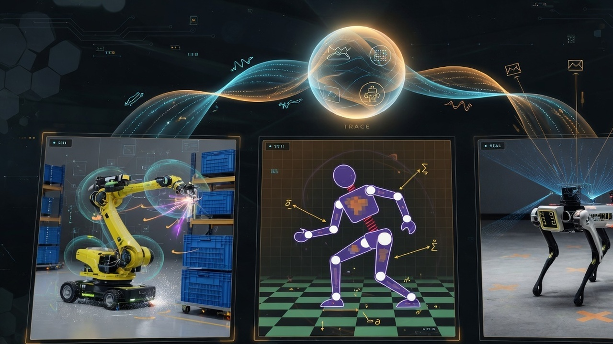
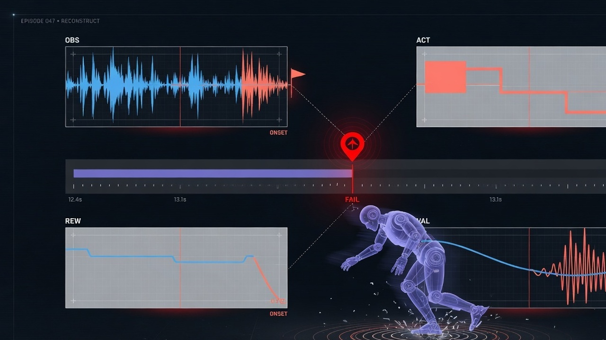
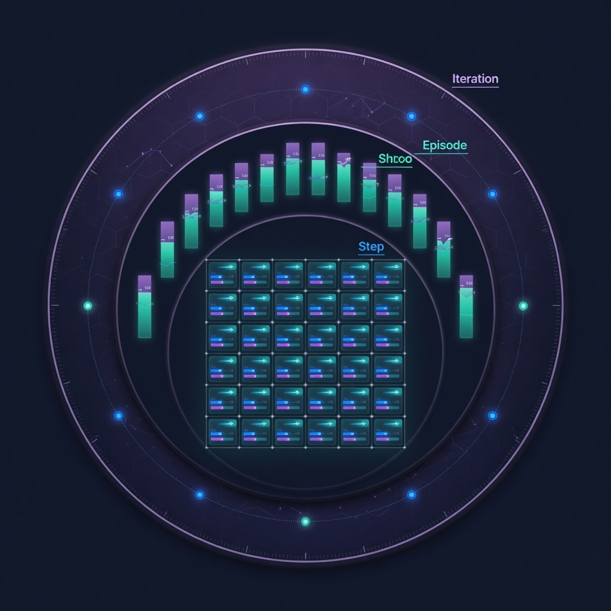
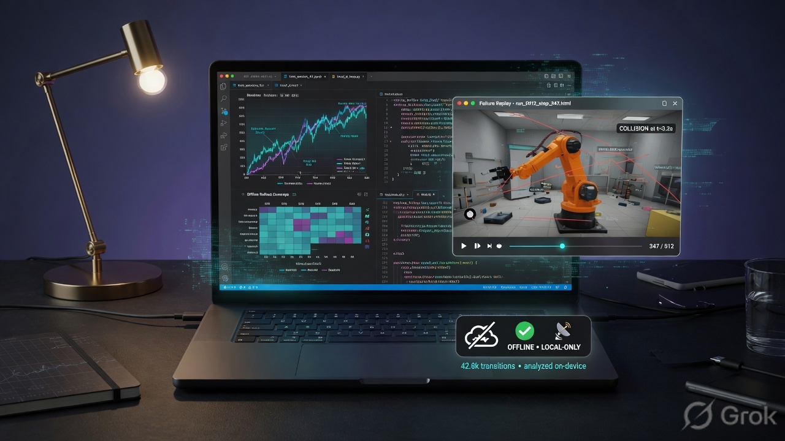

One schema, many sources
PhysX / Isaac Lab, MuJoCo-style sims, and real robots under the same PolicyTraceEvent envelope.
Capture iteration, episode, and step traces. Query failures offline. Export a single HTML replay. No account. No network required.
Marketing visuals for landing pages — what probe captures, where it runs, and how researchers reconstruct failures.

PhysX / Isaac Lab, MuJoCo-style sims, and real robots under the same PolicyTraceEvent envelope.

CUSUM onset on reward, value, and action channels. Scrub to the first abnormal step.

Iteration metrics · Episode outcomes · Step policy traces (PROBE_CAPTURE=full).

Notebook queries via ProbeRun and standalone HTML via run.to_html() — works air-gapped.
Framework-agnostic capture with optional remote sink.
pip install "git+https://github.com/sim-too-real/simtooreal-probe.git"
import simtooreal_probe as probe
probe.init(run_id="demo", capture="full")
# ... train / emit ...
probe.close()
path = probe.ProbeRun("demo").to_html("ep-0")